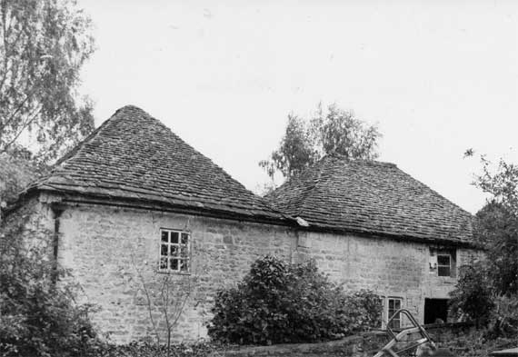
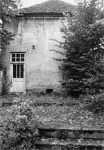
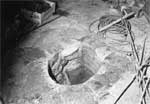
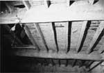
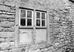
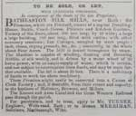
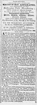
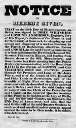

Type of building:
Industrial - stables, stove house and associated mill structures
Listing:
Grade ll
Plan and elevation:
The former stables and stove house are attached to each other to form a single
pile, two unit, two-storey structure.
Summary of the probable main building
history:
Mid 17th Century. Late 18th Century modifications.

Stove House (left) and stables (right) - north elevation
The site:
The stables and stove house (used for drying scoured and dyed wool) are situated
in a cobbled former lane believed once to have been called Dyehouse Lane (Dobbie
p.79 ) which is entered from the main road through a former carriage entrance
with residential accommodation over, the whole forming part of the property of
BE 038. The ex-lane leads steeply down (now through the grounds of another property)
to the St. Catherine's Brook and a stone arched carriage bridge over to give access
to the demolished mill buildings although the site of the mill wheel is still
discernible as an arched stone structure embodied in what is now a garden wall
but believed to be the remnants of the south wall of the mill. The mill pond is
filled-in but the overflow sluice gates remain intact and presumably workable.
On the west bank of the brook and in close proximity to the bridge, stone steps
lead down to the brook and to a small island in the middle of the brook. This
is believed to be the area where the wool was scoured. The adjacent house was
part of the factory complex whose function is presently not determined but possibly
incorporating the dyehouse and partly residential (per Tithe Map). In 1968 Peter
Coard identified and drew a brick lined oven still in situ at this property with
brick sizes which appear to point to an early 18th Century date. Near to the stone
carriage bridge is a stone built pedestrian bridge, in the grounds of BE 038,
which gave access to the demolished mill workers cottages. For the history of
the mills see both Dobbie and Rogers (below)
Exterior:
The north frontage of the stables-stove house structure is of rough coursed rubble
stone. The stables have two two-light mullion window openings (glazed) of ogee-chamfer
section on the ground floor and on the first floor above the entry a two-light
window which was probably previously a pitching hole. One light of this window
now houses pigeon coops. The entry has a chamfered dressed stone surround. The
roof of the stables is hipped and stone slate clad. The entry of the adjoining
stove house is protected by a wide four-plank and braced door with heavy iron
strap hinges (behind applied fillets) hung on pintles fixed to the dressed stone
door jamb. There are no ground floor windows to the north elevation but there
is one window at first floor level which has indications of extensive alterations
and in any event is likely to be inserted. East and south frontages of the stove
house are of ashlar, the east wall with a fixed pane window, another entry and,
centred at ground level, a small opening. At first floor level there are two blocked
former window openings. The roof is fully hipped so as to form a point at the
apex, stone slate clad and higher than the adjoining stables. The joint north
wall of the complex is braced with iron and has been crudely repaired with pieces
of recycled dressed stone.
Interior:
The stables are furnished with wooden horse stalls which are at right angles to
the entry. The heel posts of the stalls are bar stopped. One stall has an alcove
in the wall (for holding grooming equipment?). The floor is made of small field
stones laid on edge (pitched) with a drainage groove. The north and south entries
form a cross-entry although the latter entry is now sealed and formed into a window
with, on the floor before it, a large raised stone (or wood) platform, apparently
a machine base. This is probably an early 20th Century insertion when the stables
were found an alternative use. There is another but larger south entry which is
now blocked but, presumably, was a former gig entrance. To the left of the north
entry there is a tack room with tongue and groove partitioning. The stalls contain
vestiges of wood panelling. The ceiling joists and flooring over stop short over
the manger positions to allow the pitching of hay down from above. The first floor
is accessible by ladder and planked to form a hayloft. The roof is of collar-beam
construction with two roof trusses and cut back purlins tusk-tenoned to the principal
rafters. The collar is lap-jointed to the principals and secured with wood pegs.
Carpenters marks l - ll - lll - llll are present.
The stove house is almost an exact square with internal wall lengths of 5.72m. to 5.76m. Centrally positioned in the stone flagged floor is a 52cm. deep pit roughly oval in shape (c.70cm. maximum length, c.54cm. maximum width). This is stone lined (discoloured by burning) with stone flag edges. The pit is the site of the iron stove and acted both as an ash pit and a means of draught to the stove. The pit is in line with the low level opening on the external east wall of the building, which were once connected by an under-floor channel (now blocked at both ends). The remnants of iron fittings on a joist and an iron rod in the roof timbers were probably flue supports for the stove. There are two blocked window openings in the south wall and the window opening in the east wall has been reduced in size. The first floor has no apparent means of access, other than by ladder through a central opening in the joist structure. Otherwise, close set slats are secured to the tops of the joists to constitute wool drying platforms. There was probably another set of platforms at a higher level, no longer extant but indicated by empty mortises and drilled holes in some of the timbers. Above this level, there is a two truss raking queen post roof structure of considerable relative height although there is no sign of a flue exit at the apex (probably covered by later re-roofing).
Date & development:
A fulling mill recorded on the St. Catherine's Brook as early as the 16th Century
(Dobbie p.144, Rogers p.167). Part of the structure may be of this age but probably
is younger. Batheaston's early output was likely to have been white (undyed) cloth.
Medleys (cloth made from dyed wools) were probably not produced in the area much
before the early-mid 17th Century ( de L. Mann p.xii from). The north 51-54cm.
thick rubble wall and ogee-chamfer mullion would suggest this period and it is
likely that the stove house and stables were employed in the industry at this
date, although the latter building in all probability performed a function different
from a stables (mullion windows are not normally associated with such a usage).
Nevertheless, the building seems to have been in use as stables as early as 1739
(see the advertisement reproduced below). There have been subsequent substantial
modifications to both buildings since; the use of ashlar and the tusk-tenoned
roof structure point to a late 18th Century date, when the stable block was refurbished
and provided with a new roof and two of the stove house walls were rebuilt in
ashlar - from the state of the surviving north wall, the structure must have been
under substantial pressure from the weight of its roof and high level wool loading.
The windows were most likely inserted when the building had outlived its purpose
as a stove house and had, presumably, been converted into a greenhouse but were
subsequently blocked when the structure was sold away from the adjacent ex-clothiers
house, probably to preserve the privacy the house. Nevertheless, in the view of
Kenneth Rogers, the building constitutes the best preserved example of a stove
house so far identified in North Somerset-Wiltshire.
References and bibliography:
- B.M. Willmott Dobbie "An English Rural Community" Bath University
Press 1969
- J.de L. Mann "The Cloth Industry in the West of England" Alan Sutton
1987
- Kenneth Rogers "Wiltshire and Somerset Woollen Mills" Pasold 1976
- “Gloucester Journal” 23rd January 1739 Gloucester Record Office
- Quarter Sessions Easter 1829 - Somerset Records Office
- Bristol Mirror - April 4th 1840
- Keene’s Bath Journal June 20th 1823
- Victoria Art Gallery Bath - Mowbray Green photographic collection
- London Gazette - The Guildhall Library London
Thanks are extended to Mr. Kenneth Rogers for his specialist advice during this survey
Reference Pictures
| Stables and stove house looking east | Stables looking west | Junction of stable block and stove house |
 |
 |
 |
| Stove house view from the east showing draught hole at the base of the wall | The stove house. Site of the former iron stove | Stove house. View into the ceiling slats for holding wool |
 |
||
| Stables. Mullion window |
Stables. Loft window |
Survey Drawings
| Ground Plan | North Elevation | Section |
Images from the Archives
| The complex of the clothier’s house, stove house/stables (206), mill and factory buildings (207 & 208) in 1840. Reproduced from the Tithe Map. | c 1900 - Photograph showing the now demolished Factory Cottages (bottom left) with the former clothier’s house (centre). | Letter addressed to John Bell, owner of the Batheaston Mill, in April 1799. Reproduced from the “London Gazette” 1799 p. 507 (May 1799) |
 |
 |
|
| The rise and fall of the Batheaston textile industry: From the “Gloucester Journal” 23rd January 1739 |
From “The Bristol Mirror” 4th April 1840 | From “Keenes Bath Journal” 23rd June 1823 |
 |
||
| Stopping up Order - “Dyehouse
Lane” 1829 |
The plan to accompany the order to
stop-up “Dyehouse Lane”, 1829 |